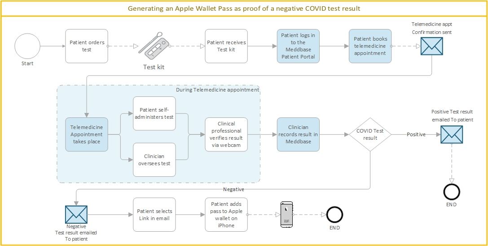
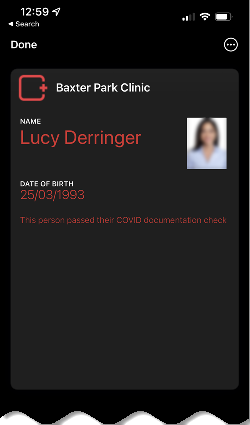
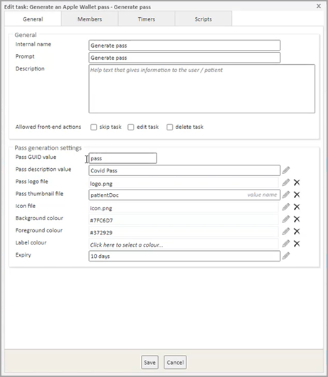

The Apple Wallet enables iPhone users to securely keep tickets, keys, debit cards and more together in one place.
At Meddbase, we’ve harnessed the Apple Wallet technology to support the delivery of digital passes.
This article outlines:
Primarily this is designed for the benefit of Patients and Employees.
But as part of this process, Meddbase users will support the delivery of Apple Wallet passes through their use of the Meddbase system.
An early application of Apple Wallet passes generated through Meddbase has been the outcome of a Covid testing process. Where the test result is negative:
To wrap some more context around this, the process could follow the steps outlined in the diagram below.

In this process, after the test kit has been ordered and received by the patient, the steps shown with a blue background involve the Meddbase solution where:
 |
<--- This is an example of what an Apple Wallet Pass could look like. For this example we have specifically blurred the picture of the person. |
There are a range of use cases including the following:
As suggested by the process flow above, there are several features in Meddbase that may support the creation and delivery of Apple Wallet Passes through Meddbase.
These are summarised below:
| The Meddbase feature | How it is used |
| Pathways tasks | To deliver the underpinning workflow to control the creation and distribution of Apple Wallet passes |
| Email templates | To provide a mechanism to deliver a notification to the patient that the pass is available and a link to enable its retrieval. |
| SMS templates | In some scenarios to provide a reminder or confirmation of telemedicine solutions. |
| Patient Portal | In some scenarios, to facilitate the booking of appointments, that facilitate telehealth appointments. |
| Telemedicine | In some scenarios, to facilitate video appointments that support the management of the process leading to the production of the Apple Wallet pass. |
There will need to be work done by our Solution Engineering teams to support the configuration and deployment of Apple Wallet Pass solutions. Please contact your Meddbase Account Manager or contact the team via the following email address accountmanagement@meddbase.com.
There are some configuration settings to control how the Apple Wallet pass will look. These configuration options are summarised below.
| What can be configured for the Apple Wallet Pass | More information |
| Pass description | Text that will appear on the front of the pass. |
| Pass logo file | An image file that appears in the top left of the pass (e.g. chamber logo). |
| Pass thumbnail file | The image that is displayed on the pass itself when the user opens the pass. |
| Icon file | This is used by the iPhone to display an icon in place of the pass. |
| Background colour | Background colour for the pass. |
| Foreground colour | Foreground colour for the pass. |
| Label colour | A colour for labels. |
| Pass expiry | To specify an expiry date and time for the pass. |
These settings can be matched up to configuration features of a pathway task as shown in the screenshot below.

The Apple Wallet has the option to hide/show expired passes. If you can't see your passes, there is a good chance it is hidden from view.
To view, unhide or delete expired passes: